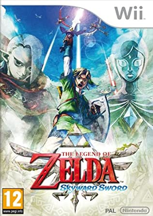

젤다의 전설을 처음 접했을 때는 2011년 나와 내 동생이 돈을 모아 닌텐도 Wii를 처음으로 샀을때이다. 한창 닌텐도 Wii 광고가 Tv에서 하고 있었고 게임을 사야하는데 젤다의 전설이 눈에 들어와 사게 되었다. 처음에 접했을 때는 매우 두려웠다. 게임오버라는 크나큰 두려움이 있었기 때문이다. 내게 있어서 게임오버는 게임이 저장지점부터 다시 시작이라는 의미 보다는 "캐릭터가 죽는다","게임 자체를 하지 못한다"였다. 하지만 크고 나서는 그런 두려움이 점차 사라지고 게임을 시작하게 되었다.
